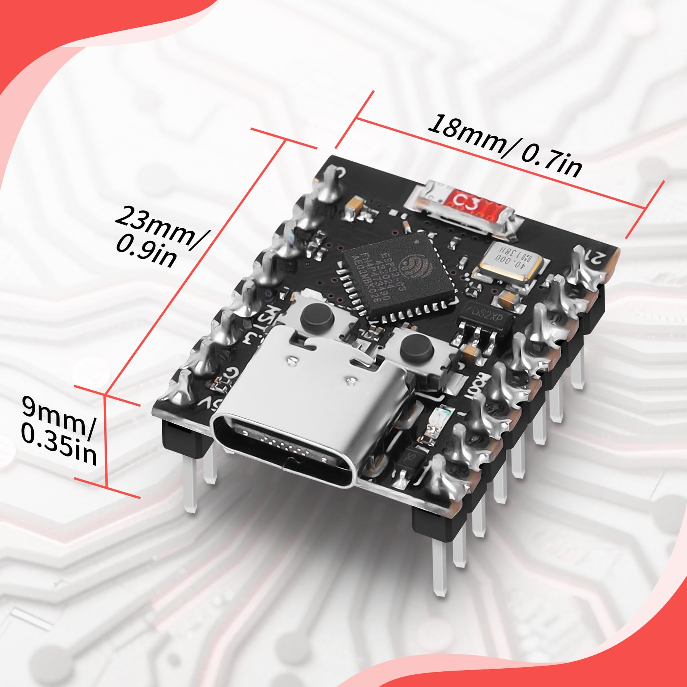
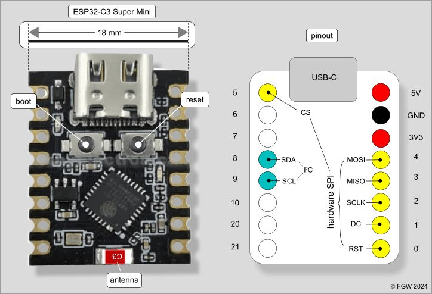
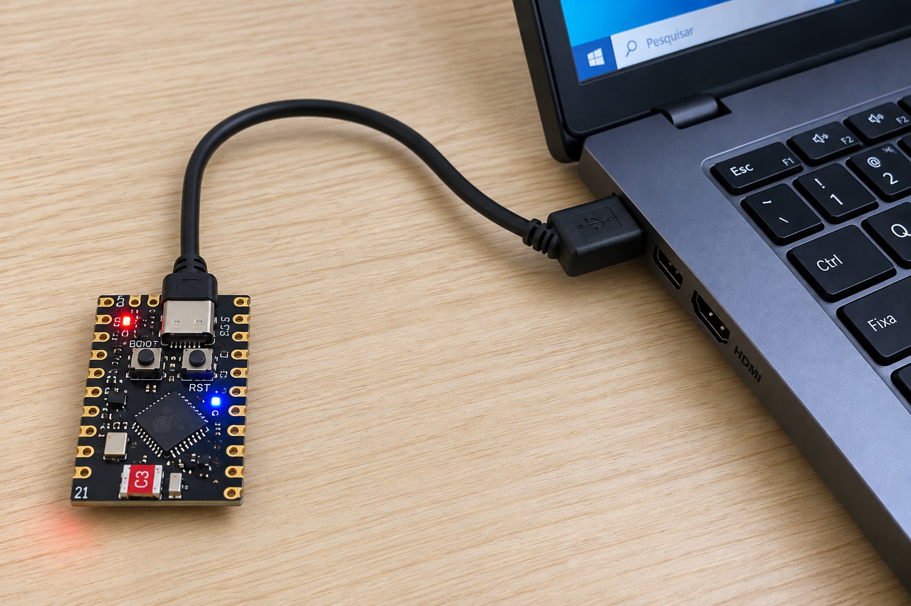
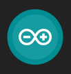
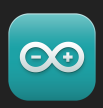
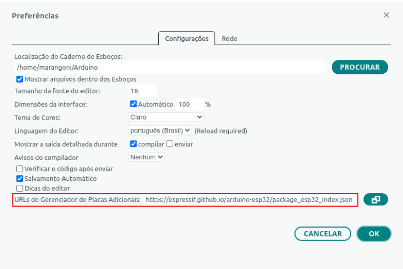
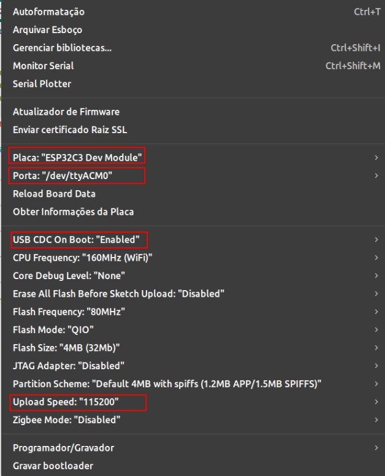

🌿 Meu progresso
0 de 5 atividades concluídas
🚀 Desafio avançado: opcional
1. Conhecendo a placa
O ESP32-C3 Super Mini é um microcontrolador: um pequeno computador programável. Ele pode receber informações de sensores, tomar decisões e controlar dispositivos.

Placa utilizada na oficina.
O ESP32-C3 conta com recursos de comunicação Wi-Fi e Bluetooth Low Energy, que exploraremos em outras atividades.
2. Explorando a pinagem
Os pinos permitem alimentar a placa e conectar sensores e dispositivos. Abra o desenho e encontre GND, 3V3, GPIO1, GPIO4 e GPIO8.

Clique para ampliar o diagrama.
| Identificação | Para que serve? |
|---|---|
| GND | Referência elétrica do circuito. |
| 3V3 | Alimentação de 3,3 volts. |
| 5V | Linha de alimentação de 5 volts; não é GPIO. |
| GPIO | Pino programável de entrada ou saída. |
| GPIO1 | Pino que também pode realizar leituras analógicas (ADC). |
| GPIO4 | Pino digital utilizável em atividades futuras. |
| GPIO8 | Em algumas versões da placa, controla um LED integrado. |
| GPIO9 | Associado ao botão BOOT e à seleção do modo de inicialização. |
3. Conectando o ESP32-C3
Utilize um cabo USB-C com transferência de dados para conectar a placa ao computador.

Clique para ampliar a ligação.
Cabos que permitem somente carregamento, com mau contato ou danificados, podem causar falhas de gravação, desconexões e ausência de mensagens no Monitor Serial.
Se algo falhar, experimente primeiro outro cabo USB-C de dados, previamente testado , antes de alterar a configuração do Arduino IDE. Peça ajuda à monitora.
- Encaixe o cabo USB-C na placa, sem forçar.
- Conecte a outra extremidade ao computador.
- Observe os LEDs presentes e mantenha a conexão durante os testes.
4. Preparando o Arduino IDE

❌ Não abrir
IDE 2.1.3

✅ Abrir
IDE 1.8.9
Configuração do suporte ESP32
- Acesse Arquivo → Preferências.
- No campo URLs Adicionais para Gerenciadores de Placas, inclua o endereço abaixo. Se já houver endereços, preserve-os.
https://espressif.github.io/arduino-esp32/package_esp32_index.json

- Abra Ferramentas → Placa → Gerenciador de Placas.
- Busque esp32 by Espressif Systems. Utilize a versão do pacote previamente testada pela equipe, pois o IDE 1.8.9 é antigo.
- Selecione a placa ESP32C3 Dev Module (não “ESP32 Dev Module”).
| Opção | Valor de referência da oficina |
|---|---|
| Placa | ESP32C3 Dev Module |
| USB CDC On Boot | Enabled |
| Upload Speed | 115200 |
| Porta | A porta detectada para a placa (ex.: /dev/ttyACM0) |
| Monitor Serial | 115200 baud |
Confira na imagem

Imagem de referência da configuração validada no laboratório. Clique para ampliar.
5. Meu primeiro programa: Hello World!
O programa envia mensagens de texto ao computador. Leia os comentários: eles explicam cada comando que você está utilizando.
// GlowUP Plant — Etapa 01: primeiro programa
// Objetivo: enviar mensagens ao Monitor Serial.
// O Monitor Serial deve estar configurado em 115200 baud.
// setup() é executada uma vez a cada inicialização.
void setup() {
// Inicia a comunicação serial a 115200 bits por segundo.
Serial.begin(115200);
// Aguarda um pouco para a comunicação se estabilizar.
delay(1500);
// println() escreve uma mensagem e pula para outra linha.
Serial.println("Ola, mundo!");
Serial.println("Eu sou a GlowUP!");
}
// loop() repete continuamente enquanto a placa estiver ligada.
void loop() {
// Envia a mesma mensagem a cada repetição.
Serial.println("Minha primeira mensagem!");
// delay() usa milissegundos: 2000 ms = 2 segundos.
delay(2000);
}
- Crie um projeto novo e cole o código.
- Confira a placa e a porta em Ferramentas.
- Clique em Verificar e depois em Carregar.
-
A mensagem
Hard resetting via RTS pin...ao final da gravação normalmente indica apenas uma tentativa de reinício, não um erro. - Abra Ferramentas → Monitor Serial e ajuste para 115200 baud.
Ola, mundo! Eu sou a GlowUP! Minha primeira mensagem! Minha primeira mensagem! ...
🚀 Desafio avançado
Desafio A: personalize as mensagens com seu nome
e o nome do projeto.
Desafio B: altere delay(2000)
para que as mensagens apareçam a cada cinco segundos.
Desafio C: pesquise o que acontece quando
usamos Serial.print() no lugar de
Serial.println() e teste.
🌱 Continue sua jornada!
Complete as cinco atividades.
Próxima etapa → Voltar à oficina